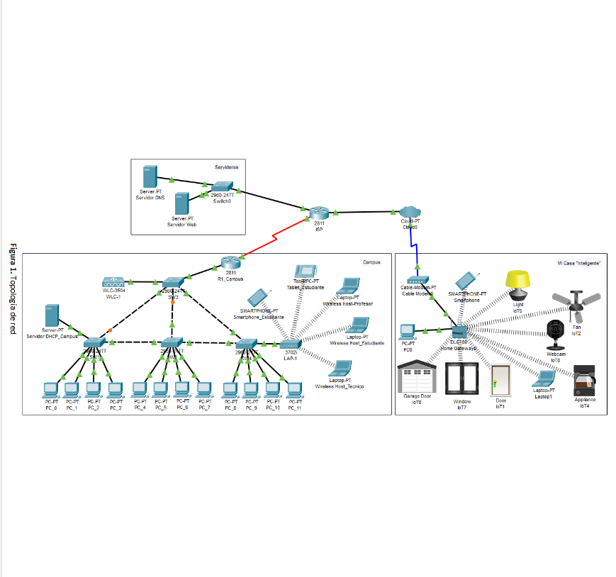
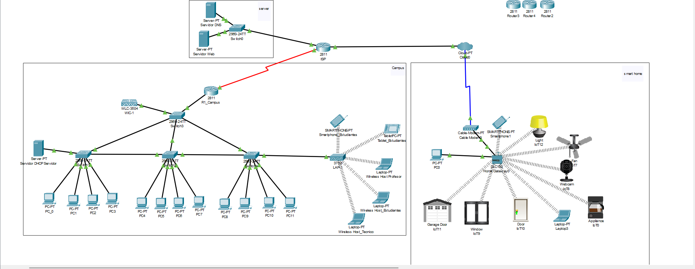
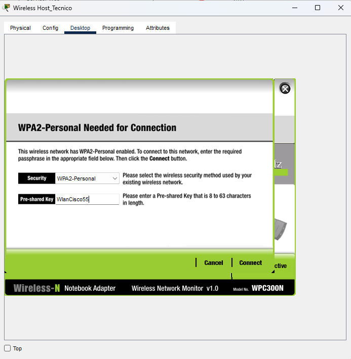
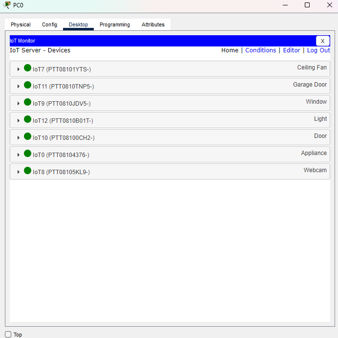
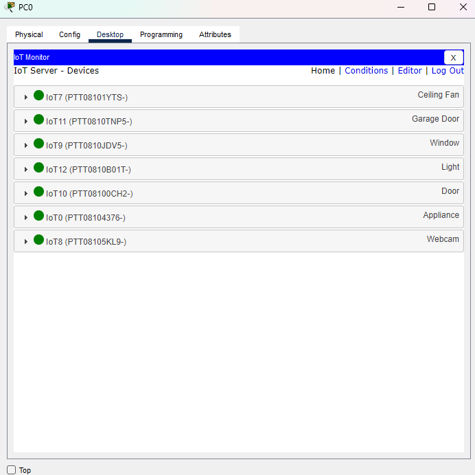
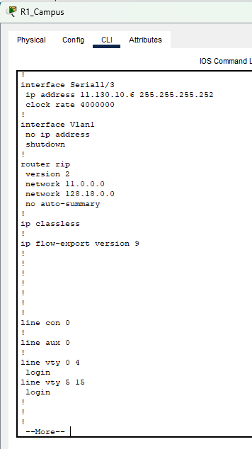
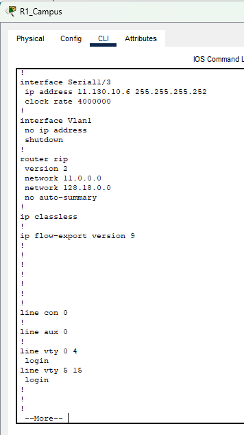

for the first portion of this lab is to properly subnet all the ip address we were given in this lab. For the campus network we were given Ip address “Campus” network: 128.18.0.0/16 subent mask = 255.255.0.0 and we have the vlan of Vlan 35,20,40 which need 950 users/hosts and Vlans 99 and 55 which need 254 users/hosts for the first 3 set of vlan we turn the subnet mask into binary 255.255.0.0 = 1111111.11111111.00000000.00000000 and the users into binary to get the host bits 950= 1110110110 =10 host bits 254= 11111110 = 8 host bits so the 950 users ip new subnet would be 1111111.11111111.11111100.00000000 = 255.255.252.0 which gives an interval of 256-252= 4. so Vlan 20 range = 128.18.4.0-128.18.7.255, Vlan 35 range = 128.18.8.0-128.18.11.255 , Vlan 40 range = 128.18.12.0-128.18.15.255. now we go to the 254 hosts. which makes 254 ip new subnet would be after going through the same process 1111111. 1111111. 1111111. 00000000 255.255.255.0. Last bit 1 is in the 1 part so the increment is by 1 /256-255= 1 and we get Vlan 99 =128.18.16.0-128.18.16.255 Vlan 55 =128.18.17.0-128.18.17.255. now we do this for the other networks/ for Wan we got 11.130.10.0/24 subnet= 255.255.255.0 this one is for the isp and cloud it 2 user so its /30 for subnet mask /30=255.255.255.252, 2=10 and 11111111. 11111111. 11111111. 11111100 = 255.255.255.252 so we get an interval of 256-252=4 and we get the results of 11.130.10.4 and 11.130.10.8 . for server lan we have Server LAN: 209.175.50+X.0/24 subent = 255.255.255.0 it needs 30 users = 11110 = 5 host bits subnet mas is 255.255.255.0=1111111.11111111. 11111111.00000000 and New subnet mask = 1111111.11111111. 11111111.11111000=255.255.255. 248 we have an interval of 256-248= 8 so we get 209.175.58.9 . and lastly we have LAN of My “smart” home: 192.168.8.1/16. subent = 255.255.0.0 we have 254 clients = 11111110 = 8 host bits the New subnet mask is 255.255.255.0 = 1111111.11111111. 11111111.00000000 the interval is 256-255=1 and the results are 192.168.8.1- 192.168.8.255 192.168.9.1- 192.168.9.255.

For making this lab we make use of the structured cabling activity from previos class to serve as a base for the lab
now that we are here we then start in maiking the logical toplogy so we first start making use of the devices present already to mount the campus networ so due to this we use the devices listed on the camput as in PC 0-11 swtitches 1-4 and router 1 to connect the diffrent racks we make use of the the patch panels of interconecion to connect the switches together aswell as the pcs after that we include the extra materials for the rest of the topology such as the wireless lan controller, the light wireless access point, the server and the extra device. than we do the rest of it being the smart home network with all the devices the home gateway and the cloud. then we make the server network with the 2 servers that will work as the web server and dns server. and to connect them all we make the isp router.
 at this step we now move to the first step is to assign ip addresses to each of the devices on the networks and use do it acording to the ips listed above how this is done is diffrent between the devices for the server it is simply go to the dextop->ipconfiguration tab and then put in the details for switches its diffrent. the first step is to go to the command line interface in there we then put the command "enable" and the the command "configure terminal" this now allows us to edit the properties of the switch. we then put the command "vlan 99" so now we switch to the vlan portion and then put "interfate/int vlan 99" so now we are directly editing the vlan 99 we then put "ip address" which we then put the asigned ip and the subnet mask we can then use the command "exit" and use the command "ip default-gateway" to set the gateway and it is now set to later verify we just put "show vlan" and itll appear. for the home gateway it is to simply go config-> lan/internet to set it up. for the router use the en command than the conf t command, we then make use of the interface command and we interface with witchever port we want to assign ip address too. for the Wireless lan controller that is to go to config -> management and set it there
after this for the campus we now need to setup the other vlan on the switch how its done is quite simple as we simply have to do what we did before and use the code "vlan x" x bieng the vlan we are going to do after that we use "name" and then asign a name to the vlan. now that we have that we then use then assign the switch ports according to the table to due this we enter the "configure terminal" we then use the command "interface range fa/x-x" x being the number of the port after that we use the command "switchport mode trunk/access" this sets what sort of role the port uses. the next one we use is "switchport access vlan" where we then assign it to a vlan

now in this part we can now setup the ability to do inter vlan comunication where we use the router as a way to comunicate we do this with encapsulation where we create subnets on the R1_Campus router using the "interface with fa0/0.x" x being the subnet/vlan so like 20,55 in our case then we use the "encapsulation dot1Q x" x being the vlan we want and then we assign an ip address while interfacing witht the required subnet. than we use the dot1Q encapsulation on the diffrent ports to get subnets we then asign the ip address wich is the default gateway of the other devices and then we have inter vlan comunication
now for the next step is to setup the dhcp server, how this is done is that we go to the services tab and turn on the dhcp service in there we set the aporpiate ip address acording to out earlier subnetting we also include the ip address of the the WLC and the DNS server for each of the DHCP pools we create. after that we return to the router and than we interface with each of the subnets we made and we use the ip helper address command and set the helper ip address to the ip of the DHCP server so the devices know where to get the ip address from.
next we setup the wlc. the first step it to setup of the management portion by setting the ip address to it, after that we use the web browser function of a pc and use the ip address we set as the address. there we set up the WLC with a an account and a basic network for now. after that is done we reenter the website but now with https//: or it wont let us enter and we can now setup the Wlan. once in the website we go to controler-> interfaces there we create the needed Wlans which are the same as the VLans so they are the same ip addresses and subnet mask and dhcp key. after that we go to Wlans and we set up the apropiate wlans with and for each wlan we create we connect it to the interface we created earlier as well as a set a wpas2 policy and encrytion with a password for each. after that we return to the logical view. there we go to the devices wanted to be connected wirelessly got to desktop-> pc wirless there we connect to the apropiate network.
now that the Campus network is almost done we can now move on to the server network. here we are just setting up the Web server and Dns server for the website we want the network to access. how this is done is by using the services tab on the servers and have one have the dns service on while the other has the http and https service on. for the web server it is the simple act of turning it on that allows for the web server to work to get the dns server to work its by assgining a name to the ip address of the web server that allows the ability to enter the website with out desired name in this case being ljds.net which is my version of the name
the next step we are going to take is the smart home network here we have aleady set the ip address we know need to set up the wireless portion in the home gate way as this allows us to connect to the other devices so we name the network to "MyHomeGateway" and set a password in this case it being test1234. then next we need to connect the other iot devices so for the devices we just go like previosly to the pc wireless portion. but for the iot devices its a bit diffrent. so what we do is go to the config tab and go to the wireless section there we put in the same information as what we put in the wireless part in the home gateway to connect it and then while in the config tab we set the iot server setting in setting to home gateway which will allow us to control the iot device from either the laptop/pc/smartphone by using iot monitor function .
 

the last part to do is connect all the networks how this is done is by using the isp router and Rip v2 routing how this is done is by using the command "router rip" there we put in the command "version 2" so we are now in rip v2 the next one we put in is "no auto-summary" this makes it so rip allows for multiple ip with diffrent subnets to comunicate we then define what networks are connected to the router with the command "network x.x.x.x" the x being the ip address of the network and this should allow for the comunication between networks
 

the final part is to make the tcp socket client on the pc and server. what u do is on the web server u go to the prgramming tab and u select new than u use the template of tcp socket server and that part is done on the server side but for the pcs it is simply make use of the programming tab again but instead of server u put client and in the ip portion u place the ip of the web server